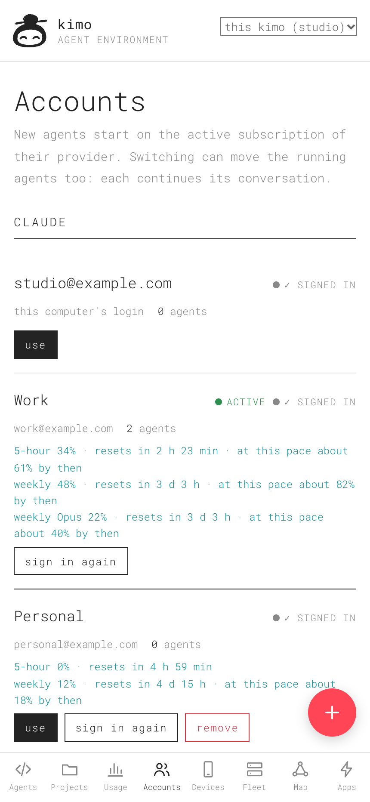
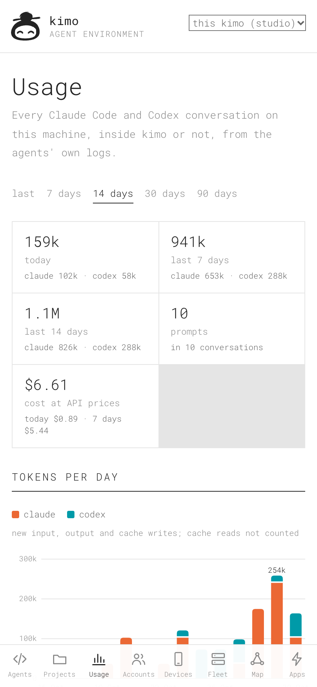
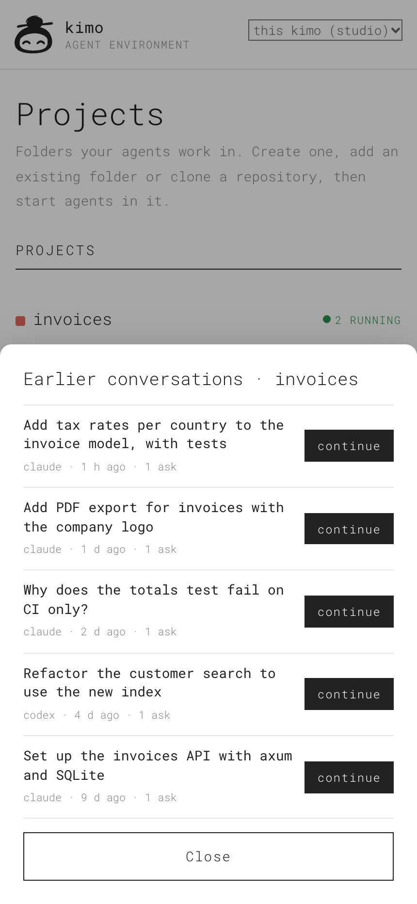
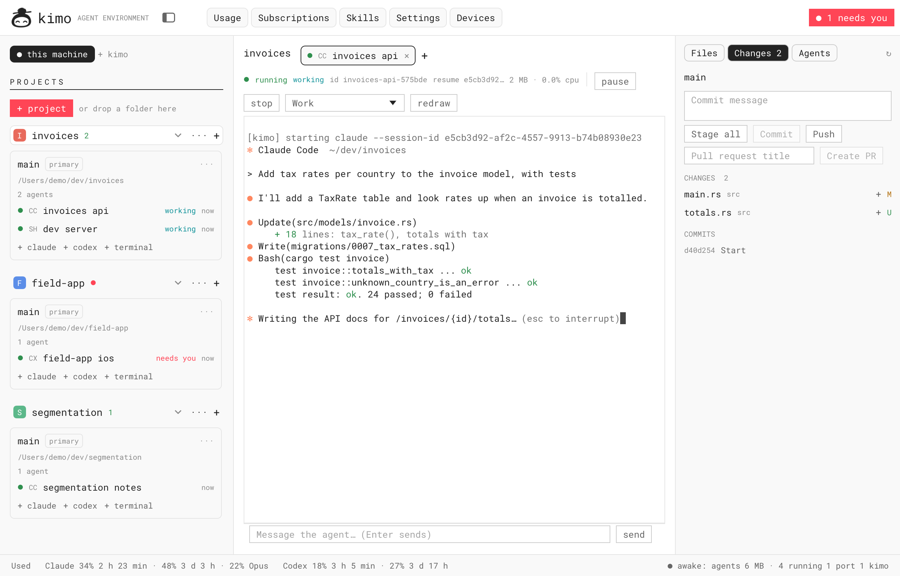
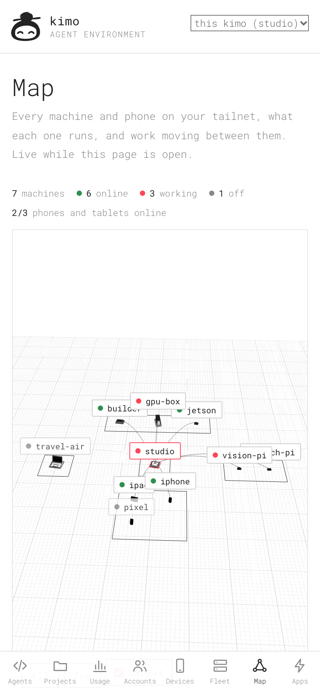

Choose your host.
Run kimo on a Mac or Linux computer. Pair your phone over a reachable LAN, Tailscale or ZeroTier network.
A mobile-first agent environment
Start a project from your phone. Let Claude Code or Codex build it on your computer. Take the conversation with you.


01 / From idea to project
kimo connects the device in your hand to the tools on your machine. Agents, files and builds live on the host you choose.
Run kimo on a Mac or Linux computer. Pair your phone over a reachable LAN, Tailscale or ZeroTier network.
Create a fresh project folder from the PWA. Start Claude Code or Codex in it and send your first task.
Read progress, answer questions and ask your agent to build, test or publish using the tools authorised on your host.
Install and sign in to your agent CLIs first. Codex sign-in currently needs a browser on that computer. Read the setup guide
02 / One environment, wherever you are
Phone, tablet or native window. The same projects and conversations, on the computer where they belong.
Ordinary folders, useful tools. Create a project, start agents or a shell, and give each agent a worktree when you want separate branches.




v0.1.15 interface · invented demonstration data
Pair your kimos and choose a host. A project on your Linux PC stays on that PC when you reach it from your Mac or phone.
Continue earlier Claude Code and Codex sessions by conversation ID. Project history keeps previous work within reach.
Inspect host and agent resources. Pause to save CPU, or stop a resumable agent to release memory and continue it later.
03 / Every machine you own
A Mac mini, a GPU box, a Raspberry Pi, a Jetson: pair them, and kimo shows them on a live map. One always-on board wakes the machine a job needs, runs it there and switches it off afterwards.

Wake-on-LAN brings a GPU machine up for a job and switches it off after 20 idle minutes. Nothing switches off while a terminal, a job or a person is on it.
Ask for CUDA, VRAM or a Jetson; the job runs where it fits. Workflows pass files between machines and wait for your approval on the phone.
kimo finds the computers on your Tailscale or ZeroTier network, installs itself over SSH and gives each one its hardware model and role. The fleet guide ↗
The coordinator pairs one way: it reaches each machine’s facts, jobs and power, never its terminals, files or accounts. Real-hardware checks (Wake-on-LAN on every model, ZeroTier) are still in progress.
04 / Make it your own
Build your own PWA, agent board or orchestration tools on kimo’s shared HTTP API and JavaScript SDK. It is the same interface kimo’s phone app uses.
Scoped app keys, live events and an embeddable terminal give your app access to the work it needs.
Explore the API & SDK// Connect with your app’s scoped key.
const kimo = new Kimo({ url, token });
const { project } = await kimo.createProject({
mode: 'new', name: 'my-next-idea', git: true
});
const agent = await kimo.createSession({
name: 'builder', kind: 'claude',
cwd: project.path
});
await kimo.send(agent.id, 'Let’s build it.');
await kimo.waitFor(agent.id);
console.log((await kimo.reply(agent.id)).text);05 / Start building
Install kimo on the computer that will do the work. Then connect your phone and make something.
curl -fsSL https://raw.githubusercontent.com/vallverdu/kimo/main/install.sh | shmacOS (Apple silicon / Intel) · Linux (ARM64 / x86_64)
kimo servekimo pairPrefer building from source? Rust installation instructions
Phone setup, limit recovery and real-device acceptance checks are still being refined. Follow the roadmap or help shape what comes next.